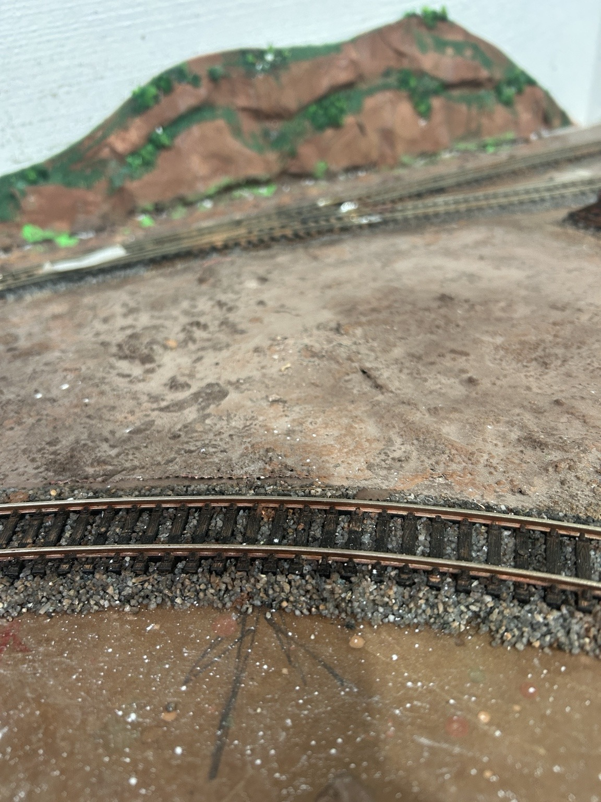
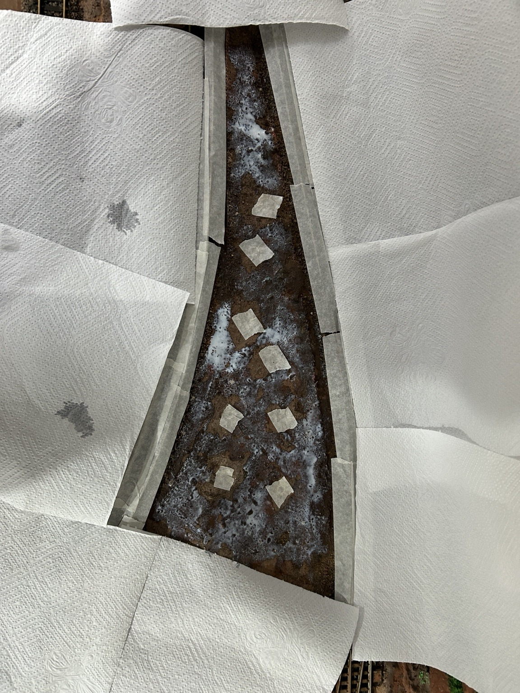
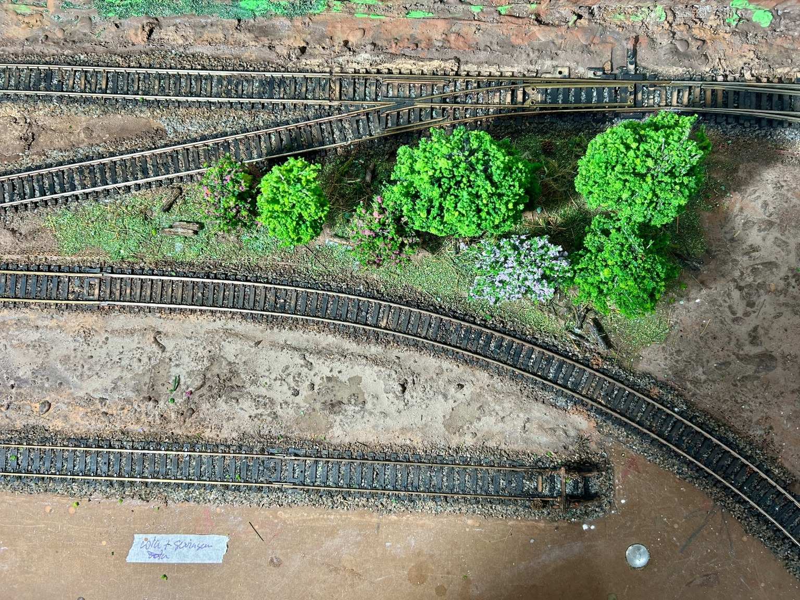

Preparação do Terreno
A aparência do terreno é uma das partes que mais contribuem para o realismo de uma maquete ferroviária. Neste trabalho, procurei utilizar materiais simples e de fácil obtenção para criar uma base que pudesse receber posteriormente a vegetação, as árvores e outros elementos da paisagem. As fotografias a seguir mostram as principais etapas do trabalho.

Esta base do terreno foi feita misturando areia e rejunte marrom, usado para assentar cerâmicas, em partes iguais e água. Jogue vagarosamente a mistura no local escolhido e deixe secar. Para acelerar esta secagem, usei um ventilador.

Após a secagem, fure no local onde serão fixadas as árvores e proteja os furos com fita crepe acima e embaixo da mesa. Acima, para evitar que os furos fiquem entupidos quando aplicar a grama, que foi feita com serragem verde. Abaixo, para que a cola que será aplicada para fixar os caules não pingue no chão.

Passe cola branca no terreno, exceto abaixo das árvores, onde sua sombra não deixa a grama crescer. Espalhe a serragem verde sobre a cola e aperte com uma bucha de cozinha. Depois de seco, espalhe galhos secos, musgo e capim (veja como fazer). Fixe as árvores. Veja na foto como ficou real?